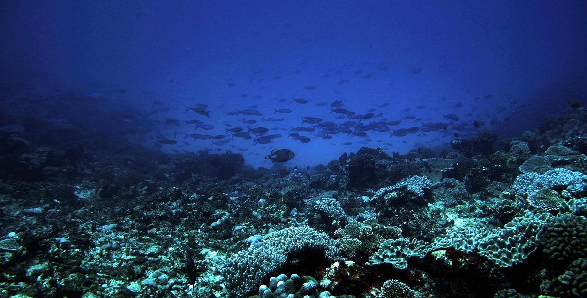
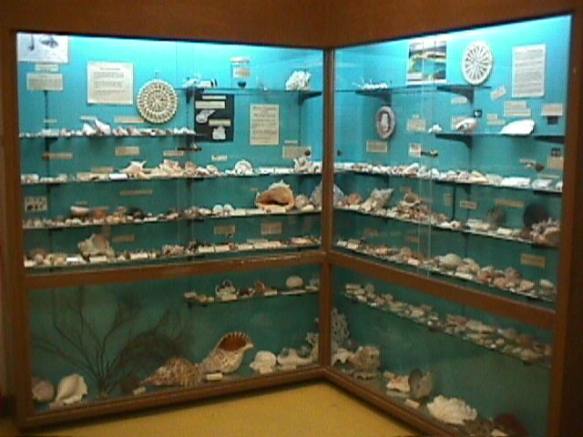
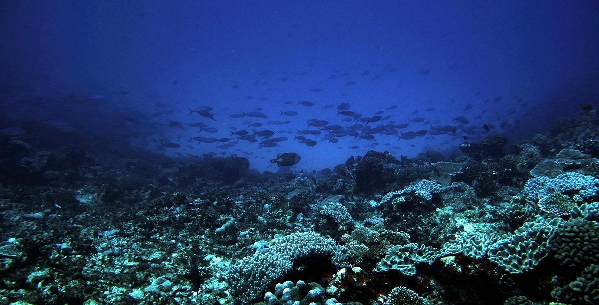
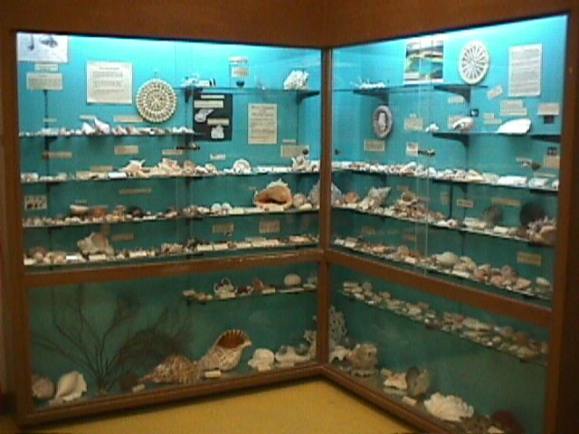

USA Travel Guide
Marshall Islands
Languages: Marshallese, English
Currency: United States Dollar
Attractions: Arno Atoll, Kalalin Pass, and Alele Museum, Library and National Archives
Visa Required: No
Getting There:
Overview: The Marshall Islands form a nation of scattered atolls and remote islands, which are known for their marine life and diving opportunities. Many of the atolls are dotted with Flame of the Forest, hibiscus and different-coloured plumeria flowers. There are also at least 160 species of coral surrounding the islands. The atolls are noted for their coconut and papaya plantations and for pandanus and breadfruit trees. The Marshallese are an interesting bunch. Apart from being a skilled seafaring people who know fishing and navigating as well as anyone, they're a thoroughly multicultural bunch. After two millennia of being isolated, the islands began to be settled and colonised from the 18th century by a wave of successive visitors and occupiers, from British and Russians, to Germans, Japanese and Americans.
 


